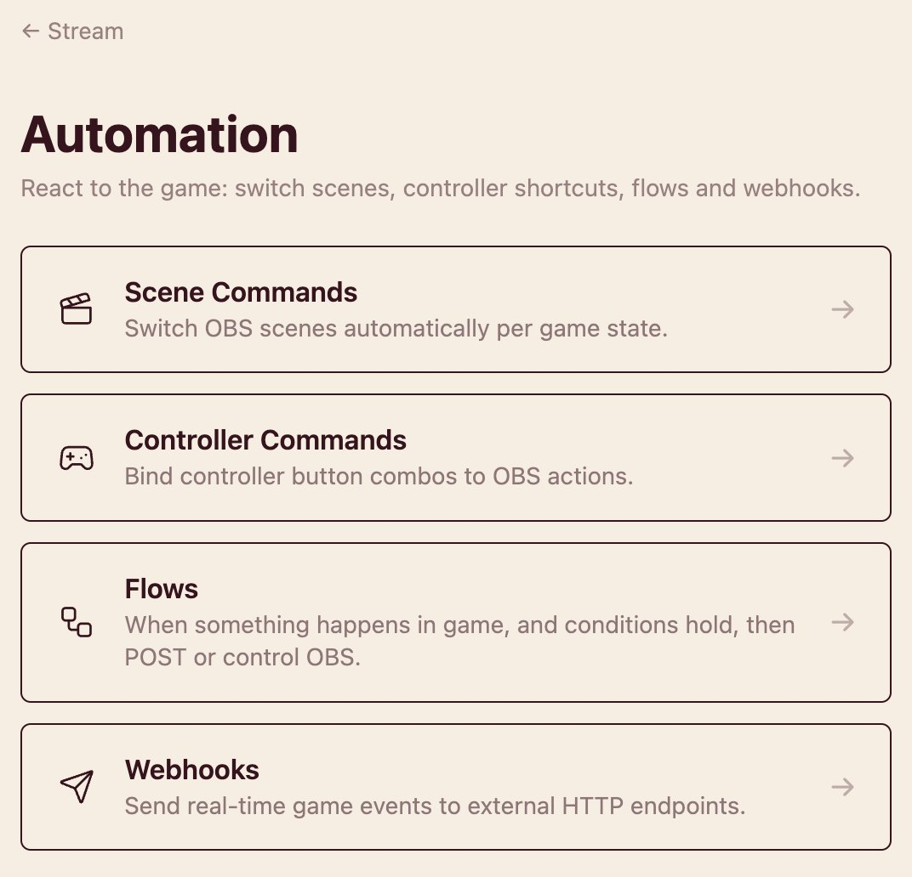

Remote control
Scenes and overlays from your phone.

What it gives you
Run your stream without touching the keyboard during a match:
- Scene Commands — OBS follows the game: your Game scene when a game starts, a big camera scene when it ends, the striking scene between games.
- Controller Commands — hold a combo on your controller to save a replay clip or toggle your camera.
- The Dashboard on your phone — switch scenes, show or hide sources, set volume and save replays from anywhere in the room.

All of this needs OBS connected — see Integrate with OBS.
How to set it up
Access from anywhere
On your own Wi-Fi nothing is needed. To control Froggi from anywhere — or give a co-host a link that never changes — use Tailscale (free).
- Install Tailscale and log in.
- In Froggi: Settings → Remote Access — follow the status there until it is green.
- Turn on Funnel to get your permanent link. It stays hidden until you click it; Copy always works.
Anyone with the link can open Froggi, but controlling it needs your host password — set it in Settings → Authorization. The other device asks for it the first time it tries to control something. For playing minigames online, the host uses ngrok instead — see Play minigames online.
OBS from your phone
The Tournament Dashboard works in any browser. Open it on your phone and you have your scenes, sources, volume and replay buffer in your hand.

- Click the phone icon in Froggi's sidebar.
- Local works on your Wi-Fi; Remote works from anywhere (needs Tailscale, Settings → Remote Access).
- Scan the QR code. The first time you control something, the phone asks for the host password (on this PC: Settings → Authorization) and checks it.
Host password: controlling Froggi from another device
Other devices (phone, a co-host's browser) can always watch; to control Froggi they need the host password, set on the host PC in Settings → Authorization.
How it works:
- On the host PC: Froggi → Settings → Authorization. Type a password or press Generate, then Save. The password is shown there. Without one, no other device can control Froggi.
- On the other device: the first time you try to control something (switch a scene, use the Tournament Dashboard, edit an overlay), Froggi asks for the host password and checks it right away — "Connected" or "Wrong password". It is remembered on that device. You can also enter it in that device's Settings → Authorization.
- Without the password a device can still watch: overlays, the live game, OBS browser sources. Players' stage-striking phone links work without it (they carry their own token).
- Changing the password on the host locks out every device until they enter the new one.
The AI assistant never sees or hands out the password — it can only tell whether one is set (get_app_status → hostPasswordSet). Point the user to Settings → Authorization on the host PC.